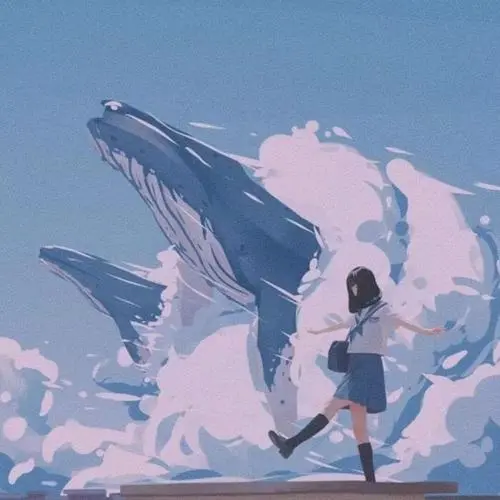

要不断的努力，才能成为更好的自己
才能成就更好的未来

我，隐藏在茫茫人海中。我既没有柔美的身段，也没有亮丽的双眸，但我有进取的心，有似水的梦怀，有崇高的理想，我坚信腹有诗书气自华。我，不愿随波逐流。在《未选择的路》中弗罗斯特曾写过：“黄色的树林里分出两条路，可惜我不能同时去涉足。”“而我选择了人迹更少的一条，从此决定了我一生的道路。”只融于大众的我便成为了实实在在的平凡人。我不愿去走别人庸俗的老路，去过跟别人同样庸俗的生活。在偷觑他人的同时，也否定了自己。我，幽默宽容。我向来不喜欢看别人满面怒容的样子，我认为他人的笑才是天下最美的风景。所以每天，我都会变成一颗开心果，尽可能地给他们带去欢乐。“比大地宽阔的是海洋，比海洋宽阔的是天空，比天空宽阔的是人的心灵。”宽容使狭隘的胸怀容纳百川，所以对待别人的过失，我都付笑谈中.我，要做自己。齐白石老先生曾说过；“学我者生，似我者死。”走不出前人的框架，自然也就不会有自己的天地。当流行泡沫小说时，我感觉那时在浪费时间，当流行网络游戏时，我感觉那是在虚度青春。要做自己，看清真实的我，拿出十二分的信心，告诉自己：“我就是我，凭什么跟他一样？！”抛掉那些人为的浮华雕饰，亮出自己的王牌，追求自己的个性，做我自己，最好！
这是我很喜欢的一个动漫电影,《千与千寻》,在电影一开始，千寻和爸爸妈妈一起来到远离城市的新家。他们是通过一条很长的隧道进入到了虚拟世界中，而当千寻用勇敢和真诚感动了这个世界的人，成功解救了父母之后，回到现实生活中，仍然是通过一条隧道穿梭回去的。千寻从一个人类真实存在的物质世界闯入到了一个充满陌生和困境的神灵世界。原来的她，胆小怯懦，然而，在白龙的指引下，她渐渐地成长，依靠自己的勤勉和真诚在汤屋站住了脚，谋求了一份生存的职位和空间。这个故事的外壳，是让一个小孩子去救父母。初初看去，千寻和任何一个普通的十岁女孩无异。她被当做孩子，撒娇和胆怯都是孩子气，其实内心深处已经有了坚不可摧的世界观和法则；成年人的傲慢在于，以为拥有金钱和权力，就深谙了世俗世界的规则和通行证，于是他们疯狂地追求它们，或者陷于求而不得的痛苦，或者放任自己随波逐流，却最终忘记了自己的姓名，沦为动物。